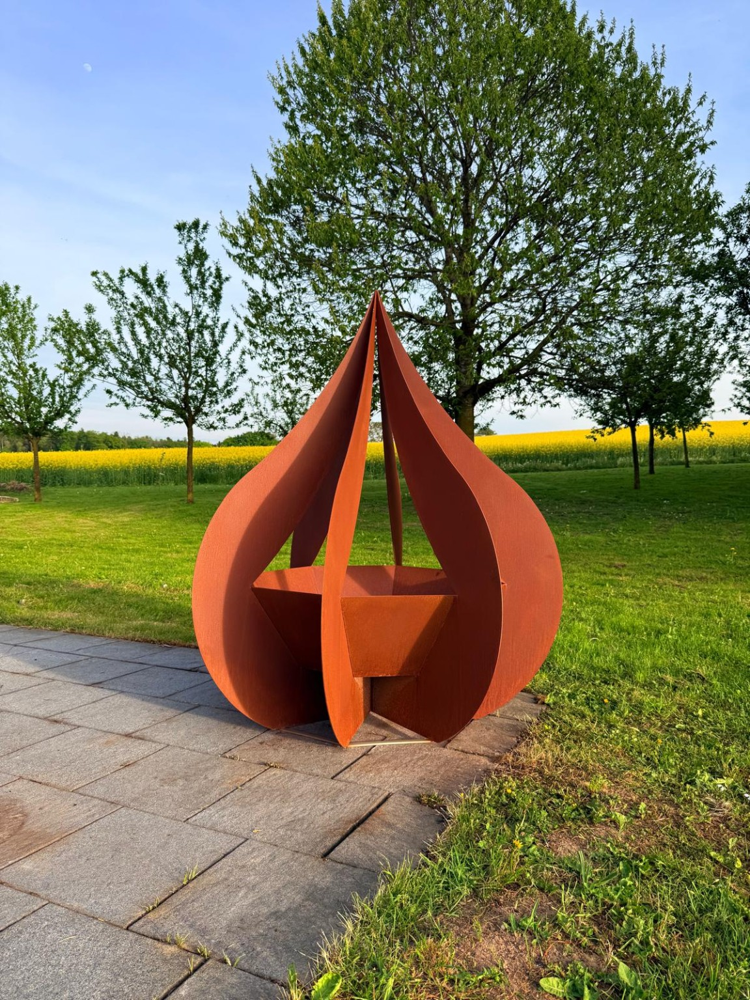
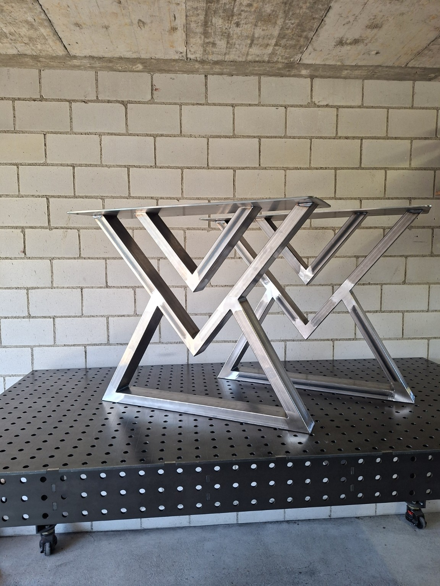
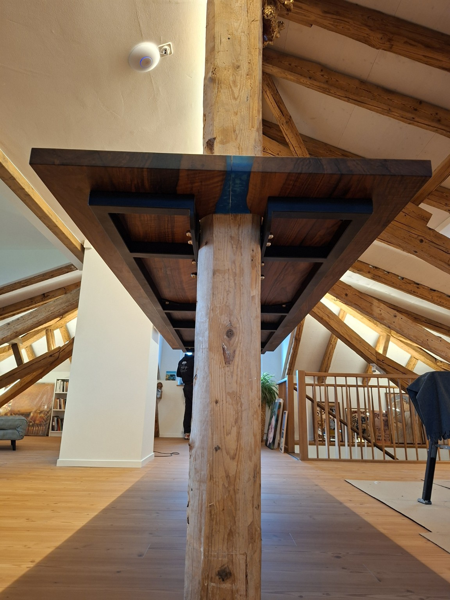
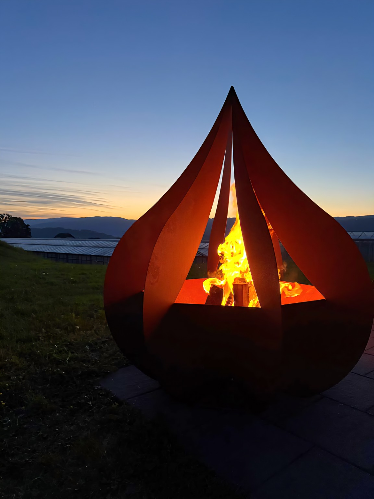
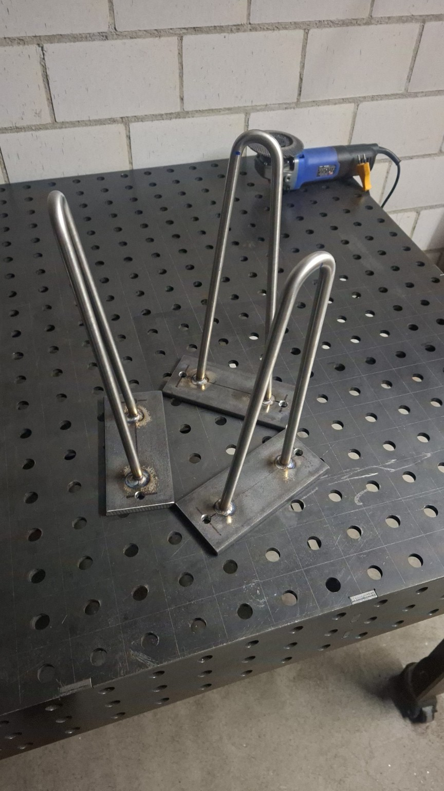
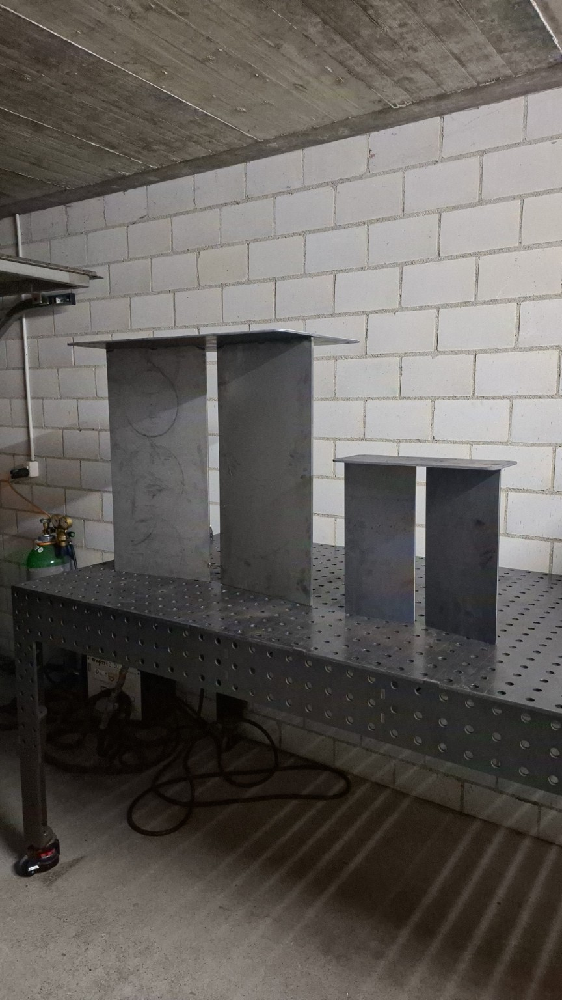
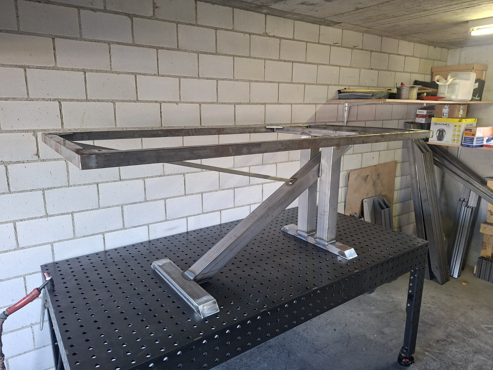
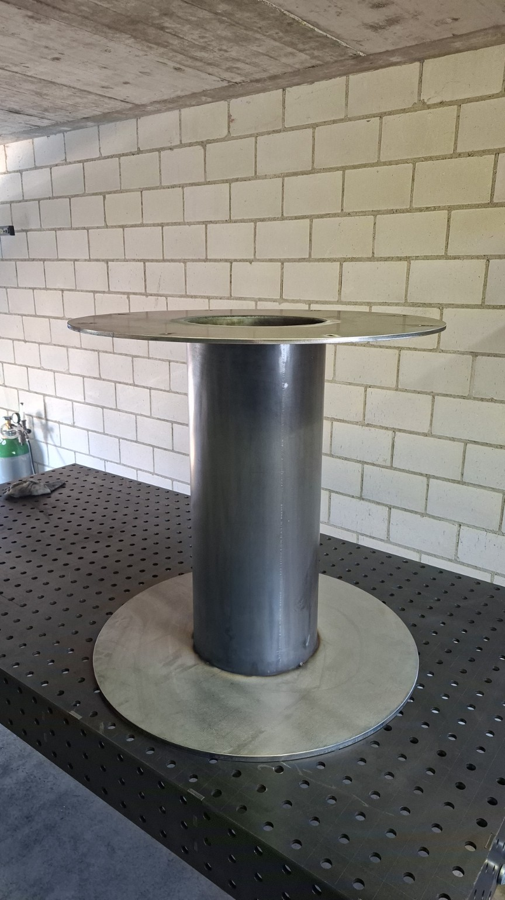
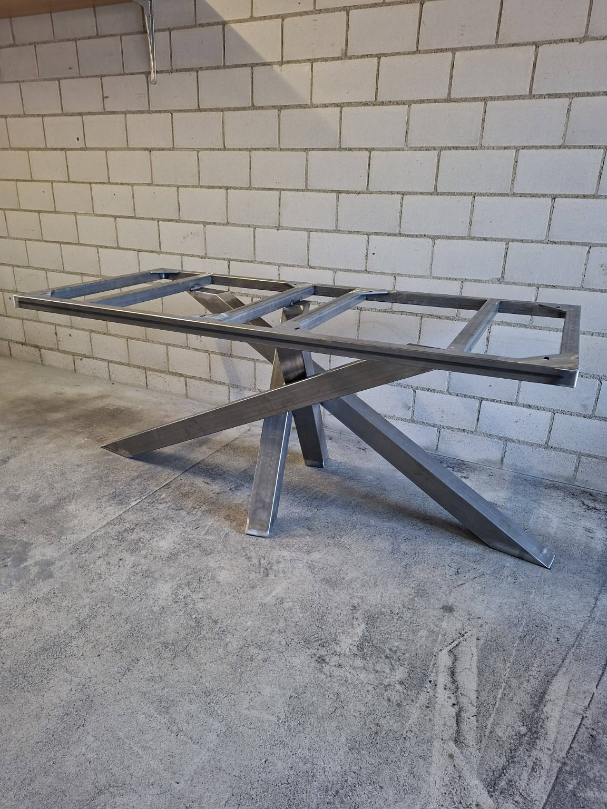

Design-Feuerschalen
Ausdrucksstarke Feuerschalen für Garten und Terrasse.
Unverbindliche Offerte anfragenBirrer Metalwork – individuelle Feuerschalen, Tischgestelle und Metallarbeiten nach Mass. Mit Leidenschaft gestaltet und gefertigt.
Produkte entdeckenUnverbindliche Offerte anfragenAlle Produkte: Preis auf Anfrage · Individuelle und unverbindliche Offerte
Vom Blickfang im Garten bis zum massgefertigten Tischgestell: Entdecke ausgewählte Arbeiten und frage dein Wunschprodukt unverbindlich an.

Ausdrucksstarke Feuerschalen für Garten und Terrasse.
Unverbindliche Offerte anfragen
Individuelle Tischuntergestelle mit markanter Formensprache.
Unverbindliche Offerte anfragen
Metallarbeiten und Konstruktionen nach deinen Vorstellungen.
Unverbindliche Offerte anfragenIndividuelle Konstruktionen, Gestelle und Metalllösungen.
Schweissarbeiten für neue Projekte und bestehende Metallteile auf Anfrage.
Reparaturen und Instandsetzungen von Metallkonstruktionen nach Absprache.
Einige Beispiele bisheriger Projekte von Birrer Metalwork.






Du interessierst dich für eine Feuerschale, ein Tischgestell, eine Reparatur oder eine Sonderanfertigung? Melde dich für eine unverbindliche Anfrage.
Birrer Metalwork
Benjamin Birrer
Schulriederstrasse 12
3293 Dotzigen, Schweiz
Telefon: 079 231 73 53
E-Mail: info@birrermetalwork.com
Unverbindliche Offerte per E-Mail anfragen Jetzt anrufen
Alle Produkte und Dienstleistungen sind ausschliesslich auf Anfrage erhältlich. Preise werden individuell offeriert. Keine Onlinezahlung oder direkte Bestellung.